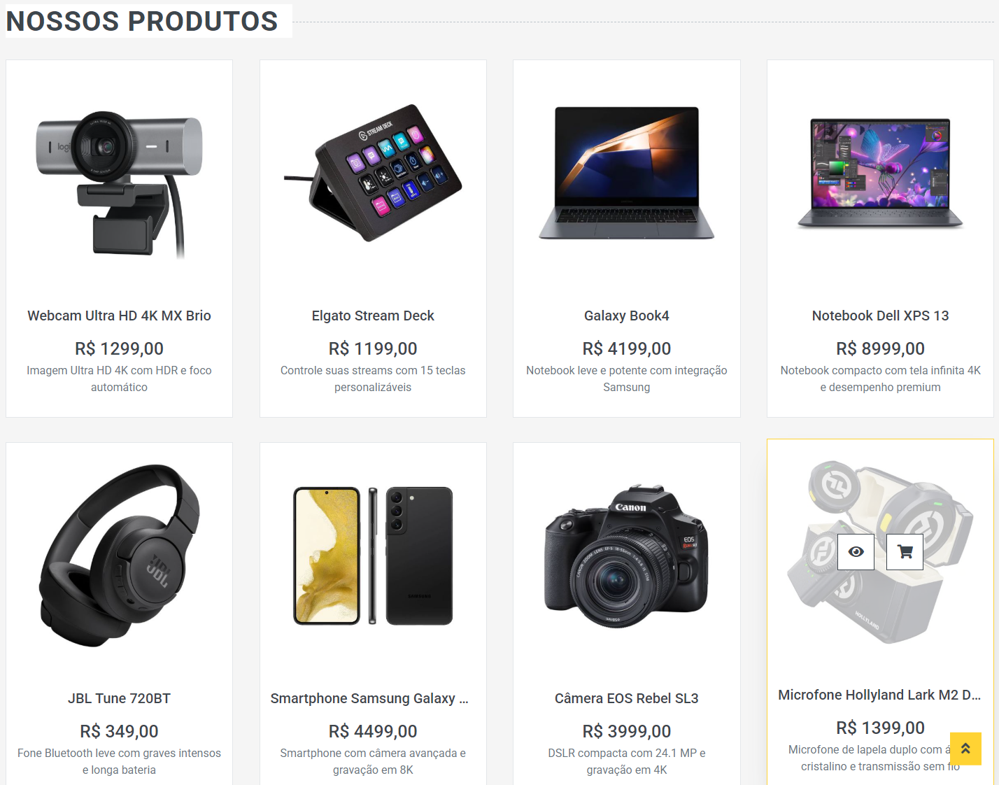
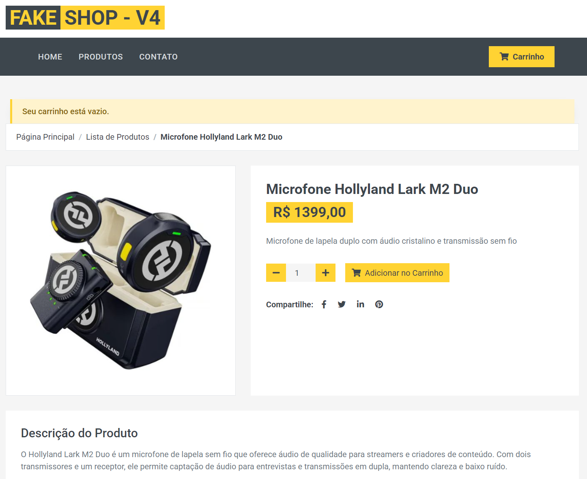
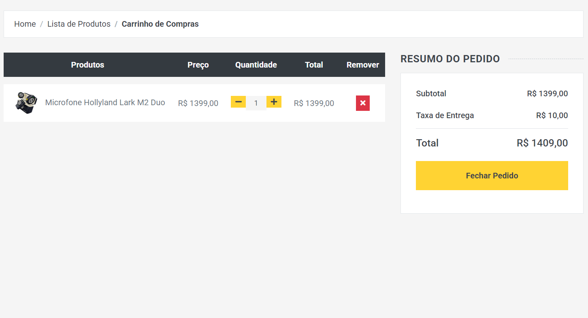
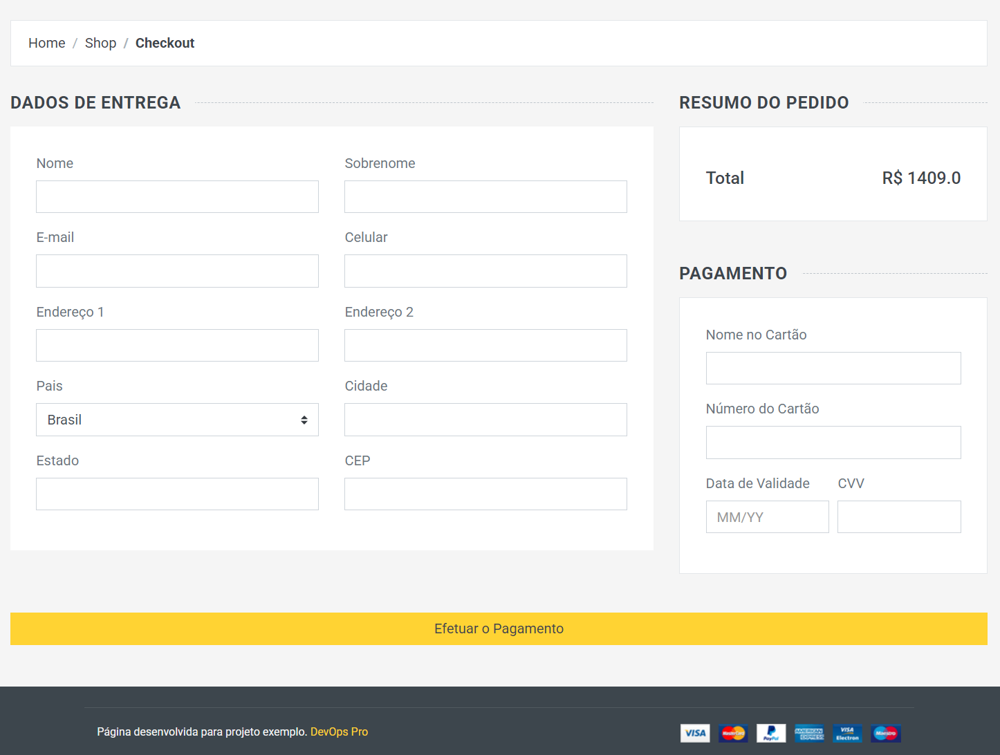

Visão geral
O Fake Shop é um e-commerce em Flask com catálogo, carrinho persistido por cookie e checkout, gravando em PostgreSQL via SQLAlchemy. Mas a aplicação é o meio, não o fim: o projeto existe para exercitar o ciclo completo de entrega — build, ship, run — com as mesmas ferramentas usadas em produção.
O problema
Colocar uma aplicação real para rodar de forma reprodutível é um problema diferente de escrevê-la: a imagem precisa ser imutável, as migrações do banco precisam acontecer sozinhas, as réplicas precisam dividir o mesmo estado e cada push deveria gerar uma versão publicável sem passo manual.
A solução
A aplicação foi containerizada com as migrações Alembic aplicadas automaticamente no entrypoint, antes do Gunicorn subir. O workflow do GitHub Actions constrói a imagem a cada push e publica no Docker Hub com duas tags: uma versionada pelo número da execução e a latest. Os manifestos Kubernetes sobem o PostgreSQL com Service ClusterIP e a loja com 10 réplicas expostas por LoadBalancer; o job de CD aplica os manifestos no cluster a partir de um kubeconfig em secret, hoje por acionamento manual. A aplicação ainda expõe métricas Prometheus em /metrics, em modo multiprocesso.
Funcionalidades
- Catálogo, detalhe de produto, carrinho por cookie e checkout
- Migrações de banco automáticas no entrypoint do container
- CI que publica imagem com tag versionada + latest a cada push
- Deploy no Kubernetes com 10 réplicas e rollout sem downtime
- Métricas Prometheus expostas em /metrics
- Página de arquitetura publicada no GitHub Pages
Arquitetura
O fluxo é push → GitHub Actions → Docker Hub → cluster. No cluster, todas as réplicas da loja compartilham o mesmo PostgreSQL, resolvido por DNS interno pelo nome do Service — qualquer réplica atende qualquer visitante. Atualizar é trocar a imagem e deixar o rollout substituir os pods em ondas, sem tirar a loja do ar.
Screenshots




Desafios & aprendizados
O maior aprendizado veio de depurar o ciclo na prática: entender que uma imagem é imutável e que a tag latest pode ficar em cache no nó, quando usar rollout restart e quando cravar uma tag numerada, e como provar em qual elo — disco, GitHub, registry, cluster ou navegador — uma mudança se perdeu. É o tipo de intuição que só o erro real constrói.